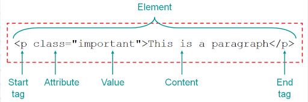
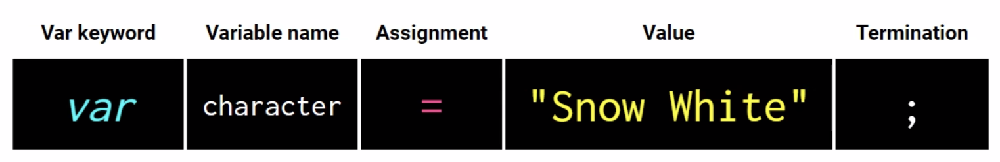

Important Links
VS Code
- Right click folder -> open in Integrated Terminal - opens Terminal in VS Code
- Get in the habit of always killing terminal when done by clicking the trash can icon
- Right click -> preview lets you see your markdown preview
- Double click a tab on the top to make it stay. You can tell it worked when the text goes from italic to normal.
- Option + click selects multiple areas to start typing
- Option+Z toggles text wrap in VS Code
- Right click > rename symbol lets you change the name of something everywhere in your document
Terminal
Terminal Notes
- press tab to autocomplete names that you know are present
- When navigating in Terminal, a leading slash on your path makes the path absolute, whereas omitting it makes the path relative to your present working directory. A leading slash means "at the root of the website", whereas omitting the slash means "the URL is relative to my current page".
- Most terminal commands have options — these are modifiers that you add onto the end of a command, which make it behave in a slightly different way.
- To find out exactly what options each command has available, you can look at its man page. This is done by typing the man command, followed by the name of the command you want to look up, for example man ls. Press q to quit when you're done.
- To run a command with multiple options at the same time, you can usually put them all in a single string after the dash character, for example ls -lah, or ls -ltrh.
Terminal commands
- pwd - print working directory // this shows what folder you're in
- ls - list // this lists the files in the folder you're in
- cd - change directory // navigate to a different folder using slashes
- Example: cd users/finnlambouris
- cd .. - navigate backwards // move up a folder
- mkdir - make directory // creates folder
- Example: mkdir coding-bootcamp
- rmdir — remove directory // removes the named directory, but only if it's empty
- If you want to remove a directory that is not empty (and also remove everything it contains), then you can use the rm -r command. BUT this is dangerous. -r (recursive) deletes everything within the directory, so make sure there is nothing you might need later on, as it will be gone forever.
- rm - remove // rm [filename] deletes a file. This delete is permanent and can't be undone via the recycle bin that you might have on your desktop user interface.
- touch - create file // create a file with any file extension
- touch [folder/folder/file] - creates a file within a folder without having to cd there
- open - open file or folder // this opens the file or folder in the appropriate application
- cp - copy files or directories // creates a copy of the file in the first location specified, in the second location specified. This is basically just creating a new copy and you're specifying the name. It isn't copying into a new folder.
- mv - move files or directories // Technically the file is being moved, but from a practical perspective, this command is actually renaming the file.
- Example: mv mdn-example.md mdn-example.txt will rename the .md file to a .txt file.
- -h or --help // will give you more information about a specific command
- curl - download files found at specific URLs
- grep - search for fragments of text inside larger bodies of text
- less, cat - view a file's contents page by page
- awk, tr, sed - manipulate and transform streams of text // for example, changing all the instances of <div>s in an HTML file to <article>
- code . - opens current directory in VS Code
Git Commands:
- Setup & Init - Configuring user information, initializing and cloning repositories
- git init - initialize an existing directory as a Git repository
- git clone [url] - retrieve an entire repository from a hosted location via URL
- Stage & Snapshot - Working with snapshots and the Git staging area
- git status - show modified files in working directory, staged for your next commit // shows what branch we're on
- git add [file] - add a file as it looks now to your next commit (stage): git add -A adds all changes
- git reset [file] - unstage a file while retaining the changes in working directory
- git diff - diff of what is changed but not staged
- git diff --staged - diff of what is staged but not yet committed
- git commit -m “[descriptive message]” - commit your staged content as a new commit snapshot
- Branch & Merge - Isolating work in branches, changing context, and integrating changes
- git branch - list your branches. a * will appear next to the currently active branch
- git branch [branch-name] - create a new branch at the current commit
- git checkout - switch to another branch and check it out into your working directory
- git checkout -b [insert new branch name] creates a branch
- git branch -d [insert branch name] - deletes git branch
- git branch -a - shows all branches
- remote branches (on server) will appear as red, while local branches (on computer) will appear as green
- git merge [branch] - merge the specified branch's history into the current one
- git log - show all commits in the current branch's history
- Inspect & Compare - Examining logs, diffs and object information
- git log - show the commit history for the currently active branch
- git log branchB..branchA - show the commits on branchA that are not on branchB
- git log --follow [file] - show the commits that changed file, even across renames
- git diff branchB...branchA - show the diff of what is in branchA that is not in branchB
- git show [SHA]- show any object in Git in human-readable format
- Tracking Path Changes - Versioning file removes and path changes
- git rm [file] - delete the file from project and stage the removal for commit
- git mv [existing-path] [new-path] - change an existing file path and stage the move
- git log --stat -M - show all commit logs with indication of any paths that moved
- Ignoring Patterns - Preventing unintentional staging or committing of files
- logs/
*.notes
pattern*/ - Save a file with desired patterns as .gitignore with either direct string matches or wildcard globs. - git config --global core.excludesfile [file] - system wide ignore pattern for all local repositories
- logs/
- Share & Update - Retrieving updates from another repository and updating local repos
- git remote add [alias] [url] - add a git URL as an alias
- git fetch [alias] - fetch down all the branches from that Git remote
- git merge [alias]/[branch] - merge a remote branch into your current branch to bring it up to date
- git push [alias] [branch] - Transmit local branch commits to the remote repository branch
- git pull - fetch and merge any commits from the tracking remote branch
- Rewrite History - Rewriting branches, updating commits and clearing history
- git rebase [branch] - apply any commits of current branch ahead of specified one
- git reset --hard [commit] - clear staging area, rewrite working tree from specified commit
- Temporary Commits - Temporarily store modified, tracked files in order to change branches
- git stash - Save modified and staged changes
- git stash list - list stack-order of stashed file changes
- git stash pop - write working from top of stash stack
- git stash drop - discard the changes from top of stash stack
GitHub
Pulling from and pushing to GitHub
- Never edit files directly in GitHub!
- Make sure you're in the correct folder. If there isn't already a repository set up, enter: git init
- To check what branch we are currently on, enter: git status
- To make a new branch, we'll enter: git checkout -b feature/[enter name]
- The checkout command is to move the working branch to a new branch, and the -b flag creates a new branch.
- It's good to do "feature/" to indicate that it is a feature. It is good practice to name the branches for the feature that will be developed by them to help indicate the purpose of each branch.
- To add/update code to the current working branch, enter: git add -A
- The -A flag indicates that we want to add all changes.
- To commit these files to the repo, enter: git commit -m [enter message]
- If you forget to add the -m message, it will open up a new window where you must type the message. In this window, press I to enter insert mode and then type your message. When you're done, press esc to exit insert mode, and then press :wq to write and quit.
- Always double check to make sure your local branch is in sync with the base branch in GitHub. To do this, enter: git pull origin main
- Use the pull command to receive a branch's modifications into the local environment. "origin" indicates the source of the pull will be in the GitHub repo. "main" indicates the branch.
- If all is well, you should receive the message "Already up to date."
- Finally, to push changes, enter: git push origin feature/[enter name]
- After this, when you open GitHub you'll see that there is a pull request. Great job!
Helpful Links
HTML
HTML Notes
- The head element contains information about the webpage.
- The body element represents the visible content shown to the user.
- <a href="[url]">[link text]</a> - adding a link
- <img src="[url or path]" alt="[image description]">- adding an image
- <!-- [insert comment] --> - add comments in html file without them showing up on the actual webpage
- The shortcut for this is to press command + / to make the current line into a comment.
- Classes and ids are similar, but a class can be used multiple times while an id can only be used once.
- With self closing tags, make sure to do /> instead of >, even though > will still work.
- <div> and <span> are generic tags with no meaning (not semantic)
- Semantic HTML is better for code legibility, accessibility features like screen readers, and SEO. If you're using a generic tag, there is probably a semantic tag that would work better.
- header vs heading - header is at the top of the page, heading is <h1> through <h6>
HTML Forms
- The HTML <form> element can contain one or more of the following form elements:
- <input>
- <label>
- <select>
- <textarea>
- <button>
- <fieldset>
- <legend>
- <datalist>
- <output>
- <option>
- <optgroup>
- The input element is used for text fields like names, email addresses, and messages
- <label for=“[input id]”>[label text]</label>
- <input id=“[id]'': type=“[text]"" / "[password]” placeholder=“[placeholder]”>
- The select element defines a drop-down list
- <label for=“[input id]”>[label text]</label>
-
<select id="[id]" name="[name]">
<option value="[option 1]">[option 1]</option><option value="[option 2]">[option 2]</option><option value="[option 3]">[option 3]</option></select>
- The button element defines a clickable button
- read more about HTML forms here
- Data Attributes allow us to store extra information on HTML elements
- Syntax to create custom data attributes: data-[insert anything here]=“[insert value here]”
Helpful Links
CSS

CSS Notes
- In Chrome Dev Tools, click the triangle icon on shortcuts to see what each declaration is
- to link an external stylesheet to your HTML file, you must type <link rel="Stylesheet" href=[insert path to Stylesheet]>
- You can apply multiple classes to HTML; just separate them by a space.
- Example: class="class-1 class-2"
- The font-family values go from most specific to least specific. This means that if the first font cannot be accessed by the device, it will move onto the next value.
- Example: font-family: "Comic Sans" cursive sans-serif
- Setting the height and line height as the same number is a cheat code to center text vertically.
Reset Stylesheets
- Every browser has its own default style rules. It is best practice to overwrite these rules so that your webpages will look uniform across all browsers.
- Have a seperate reset.css stylesheet
- Stylesheet order:
-
<link rel=“stylesheet” href=“reset.css”>
<link rel=“stylesheet” href=“thirdparty.css”>
<link rel=“stylesheet” href=“style.css”>
-
<link rel=“stylesheet” href=“reset.css”>
- The reason they should be in this specific order is because HTML is read from beginning to end, meaning that your CSS rules can be overwritten if they're in the wrong order.
Selectors
- From least to most specific:
- Universal - selects all HTML elements on the page
- Example: * {
- Element - selects HTML elements based on the element name
- Example: p {
- You can also specify that only specific HTML elements should be affected by a style rule
- Example: p.class would only affect paragraphs with the “class” class
- Class - selects HTML elements based on (one of) their class(es)
- Example: .class {
- ID - selects HTML elements based on the unique id
- Example: #unique-id {
- Universal - selects all HTML elements on the page
- Any of these types of selectors can be given a further pseudo-class, which is used to define a special state of an element
- Example: .class:hover {
- The rule with more specificity is the one that will win if there are conflicting style rules
- Style rules can be grouped
- Example: h1, h2, p {
- You can use + sign to determine rules for a specific tag directly following another tag
- Example: article ul + p selects
<article><p>...<ul><p>
- Example: article ul + p selects
- You can also use the * symbol to select everything within a parent element
- Example: section ul * {
- The > symbol only selects direct children
- Example: section ul > * {
- Creating variables at the root
- :root {
--name: [any repeated style rule];}
- :root {
- Then, later in the document when you want to reference the variable, use:
-
[element] {
[property]: var(--name);}
-
[element] {
- Root variable example:
-
:root {
--white: #fff;}
p {color: var(--white);}
-
:root {
- Here's a fun game to help practice selectors: CSS Diner
Display
- Inline elements do not start on a new line and only take up as much width as necessary.
- You cannot set the width and height of inline elements - except for images
- Block elements always start on a new line and take up the full width available.
- margin: 0 auto can be used for block elements to set the top and bottom margins to 0 and center it horizontally within its parent element.
- Each element has a default display, but it can be changed with CSS by adding the “display” property.
- Elements can be hidden by using the display:none declaration.
Box Model
- From innermost to outermost: content -> padding -> border -> margin
- Content - the content's “hitbox”
- Padding - the space between the border and content
- Border - the border! Duh!
- Margin - the spacing between elements
- The overall “size” of the image is only the content + padding + border, because the margin isn't a part of any element, it's just the spacing between them.
- Example: 200px x 200px image with 20px padding, 10px border, and 30px of padding will have a width and height of 260px (200 + (20x2) + (10x2).
- The border-style needs to be set to have your border appear on the page.
- shortcuts that have 4 values around it such as "padding" are writtem in NESW direction
Positioning
- Types of positioning:
- Static - this is the default value and the element is in normal document flow
- Relative - the element is still in normal flow, but the values top, right, left and bottom can be used to offset the element.
- Absolute - The element is removed from the normal flow and its final position is relative to the determined parent or ancestor. To determine the parent, you must give it the position: absolute; declaration as well. Absolute-positioned elements are also moved by the values of top, right, bottom, and left.
- Fixed - The element is removed from the normal document flow and the position is relative to the viewport. Fixed-position elements are also determined by the values of top, right, bottom, and left.
- Viewport: the area of the window in which web content can be seen
- Note: normal flow means that the HTML will display in the order it is written. If a static or relative positioned <img> is written inside of a <section>, it will appear there on the page.
- Z-index controls the stacking order of overlapping elements on a page. An element with a higher z-index value will appear in front of an element with a lower z-index value.
- Viewport units:
- vh - the height of the screen
- As opposed to “height,” which is just the height of any given object
- vw - viewport width
- vh - the height of the screen
Transformations
- Apply transformations with the transform property
- HTML text written in all caps will always be read by screen readers as acronyms. If you want any words to be in all caps, use the "text-transform: uppercase;" declaration.
- Read more about the transform property here
Animation
- Animations consist of two components:
- a style describing the CSS animation
- .[element] {
animation: [name] [time] [how long the animation will last];/* or */}
- .[element] {
- a set of keyframes that indicate the states of the animation's style
- @keyframes [name] {
0% {[insert rule];}100% {[insert rule];}}
- @keyframes [name] {
- a style describing the CSS animation
- Each animation property can be defined individually, but for cleaner and faster code, it's recommended that you use the animation shorthand.
- animation: [animation-name] [animation-duration] [animation-timing-function] [animation-delay] [animation-iteration-count] [animation-direction] [animation-fill-mode] [animation-play-state];
- For an animation property to work, you must define the animation-name and animation-duration.
- Additional Animation Properties
Helpful Links
JavaScript
JavaScript notes
- Add debugger; into any section of code where you're having a problem, and then Chrome DevTools will open a helpful debugger menu where you can go step by step to see where your exact problem is
- JavaScript is case sensitive. This means myVariable is not the same as myvariable.
- Control flow is the order in which a computer executes code in a script.
- JavaScript linking should be added at the bottom of your code, directly before the /body closing tag. This is because the code is read in order from beginning to end by the browser, and we don't want any functions to run before the page is fully loaded.
- JavaScript programs can be inserted almost anywhere into an HTML document using the <script> tag. But as a rule, only the simplest scripts are put into HTML. More complex ones reside in separate files.
- <script src="[path to .js file]"></script> - links JavaScript file to html webpage
- // [insert comment/code here] - single line comment
- /*
[insert comment/code here]
*/ - multi-line comment - Local vs. global is very important.
- If you define a var inside of a function, it will be local, meaning it can only be accessed inside of that function. That is what “local” means.
- JavaScript starts array counts from 0, not 1
- There are 7 primitive data types:
- Number: Any number, including numbers with decimals: 4, 8, 1516, 23.42.
- BigInt: Any number, greater than 253-1 or less than -(253-1), with n appended to the number: 1234567890123456n.
- String: Any grouping of characters on your keyboard (letters, numbers, spaces, symbols, etc.) surrounded by single quotes: ' ... ' or double quotes " ... ".
- Boolean: This data type only has two possible values— either true or false (without quotes). It's helpful to think of booleans as on and off switches or as the answers to a “yes” or “no” question.
- Null: This data type represents the intentional absence of a value, and is represented by the keyword null (without quotes).
- Undefined: This data type is denoted by the keyword undefined (without quotes). It also represents the absence of a value though it has a different use than null. undefined means that a given value does not exist.
- Symbol: A newer feature to the language, symbols are unique identifiers, useful in more complex coding. No need to worry about these for now.
- Normally, one uses null to assign an “empty” or “unknown” value to a variable, while undefined is reserved as a default initial value for unassigned things.
- There are several other types as well, including
- Objects: collections of related data and/or functionality. These usually consist of several variables and functions (which are called properties and methods when they are inside objects).
- The “this” keyword refers to the current object the code is being written inside. It is very helpful because it lets you reuse functions in different execution contexts.
Variables
- A variable is a named container that allows us to store data in our code.
- A variable name should have a clean, obvious meaning, describing the data that it stores.
- To declare/create a variable, the “var” or ”let” keyword is used
- Example: let message=“Hello!”
- You can change your variable later, but you cannot use the “var” or “let” keyword again. For example, to change the message above to something else, you would just add this later into the code: message=“This can say anything!” So, we should declare a variable once and then refer to it without var or let.
- "var" was the old way of declaring variables, and "let" and "const" is the new way. Neither is really wrong.
- The reason let is different from var is because let allows you to scope to any curly brackets (like if loops) whereas var can only scope to functions.
- Long variables should be named in camelCase like this: myVeryLongName
- You can name your variable pretty much anything, but there are still some rules
- The only special characters allowed are _ and $. Hyphens or anything else are not allowed
- The variable cannot start with a number
- It can not be a reserved word
- To declare a constant (unchanging) variable, use const instead of var or let. Variables declared using const are called “constants” and cannot be reassigned. An attempt to do so would cause an error.
- When you have a variable that is hard to remember (like hex codes), it is standard practice to define them as constants in all caps with underscores.
- Example: const COLOR_RED = "#F00";
- For strings, if you need to use a “ or ' within it, put a backslash before it so it doesn't close your string
- Example: “I/'m a string!”
- Use backticks (`) to embed variables and expressions into a string by wrapping them in ${…}
- Example: let name = “Finn”;
alert(`Hello, ${name}!`); // Hello, Finn!
- Example: let name = “Finn”;
Operators
- JavaScript Operators
- The Assignment Operator (=) assigns a value to a variable
- Example let x = 3; // now x has the value of 3
- Arithmetic operators are for simple math like addition, subtraction, multiplication, etc.
- Comparison Operators are for comparing values.
- “=“ is an assignment operator. Meaning, when you're trying to see if two values are equal, you shouldn't use “=“. Instead, you should use “==“ or “===“
- "==" just checks the value, whereas "===" checks the value and type
- Example: “5” == 5 is true, whereas “5” === 5 is false, because the first 5 is a string while the second 5 is a number, meaning their type does not match.
- Logical Operators are for checking to see if certain functions are met.
- && - logical and
- || - logical or
- Example: IF (function1 && !function2) {
console.log (“this will print if function1 is true and function2 is false”);}
- Example: IF (function1 && !function2) {
- The typeof operator simply returns the type
- Example: let myVar = 4
typeof myVar // “number”
- Example: let myVar = 4
Conditionals
- Conditionals are code structures used to test if an expression returns true or not. A very common form of conditionals is the if...else statement.
- Example: let iceCream = "chocolate";
if (iceCream === "chocolate") {alert("Yay, I love chocolate ice cream!");} else {alert("Awwww, but chocolate is my favorite…");} - The expression inside the if () is the test
- Example: let iceCream = "chocolate";
Functions
- Functions are the basic building block of JavaScript. Functions allow us to encapsulate a block of code and reuse it multiple times.
- There are 2 requirements for JavaScript functions
- Define the function
- Call the function
- A function can be defined using the function keyword, followed by the name of a function and parentheses.
- Example: function [function name] ([input parameters if there are any]) {
// write function code here}
- Example: function [function name] ([input parameters if there are any]) {
- You can put (arr) inside a function argument to denote that the input should be an array
- Function parameters are variables that are defined in the function definition and can have a value of any data type.
- Example: function greet(firstName, lastName) {
alert("Hello " + firstName + " " + lastName);}
greet("Steve", "Jobs");
- Example: function greet(firstName, lastName) {
- Function EXPRESSIONS start with a var and are stored as values. This means they can then be called inside of other functions.
- Example: var myFunction = function(x,y) {
// function code}
- Example: var myFunction = function(x,y) {
- Function DECLARATIONS on the other hand do not start with a var can cannot then be called inside of other functions.
- function myFunction2(x,y) {
// function code}
- function myFunction2(x,y) {
Loops
- For loops:
- 3 properties needed: iterator; criteria; increment
- Example: (i = 0; i < array.length; I++)
- 3 properties needed: iterator; criteria; increment
- While loops:
- While loops are repeated until the condition is no longer met. If the condition is always met, the loop will continue infinitely and crash the computer. Therefore, something needs to change to mean the condition won't always be met.
Objects
- In JavaScript, almost anything is an object. All JavaScript values, except primitives, are objects.
- Object examples: Arrays, Maths, and Dates.
- Creating an object: var myObject = {
(property name: value),(property name: value),};
- After you create an object, you can access the properties within it by using a “.”
- Example: myObject.propertyName;
- Methods are functions that exist on objects
- Creating an array: var myArray = [(insert your array separated by commas)]
- Constructors are used when you need to to create more than one object, and they should be started with a capital letter
- There are also JSON objects, which contain data in the form of key/value pairs
- JSON.stringify puts all object text into a string
- JSON.parse then takes a string and puts it back into object form
Document Object Model
- Document - webpage (usually html)
- Object: every html element in the document
- object.method notation
- Example: document.getElementById(h1);
- .getElements will return an array, while .getElement will return a singular value
- You can't use hyphens in JavaScript, so if you're updating a property with multiple words, you'll use camelCase instead
- Example: title.color.backgroundColor = “blue”;
- The DOM is essentially an API to the page which allows programs to read and manipulate the page’s content, structure, and styles.
- There are 3 types of objects:
- user defined objects
- core language objects (arrays, strings, booleans, etc.)
- host objects (browser-specific objects - HTML elements)
- The object structure of the DOM is represented by a “node tree”. It is called a tree because of the “branches” it has. Everything stems from the HTML tag, and then it breaks off into different branches for the head and body. Then, each of those break off into other branches, such as h1, p, img, etc.
- Nodes are also referred to by their position in the tree relative to other nodes:
- Root node: The top node in the tree, which in the case of HTML is always the HTML nod
- Child node: A node directly inside another node.
- Descendant node: A node anywhere inside another node.
- Parent node: A node which has another node inside it.
- Sibling nodes: Nodes that sit on the same level in the DOM tree.
- The DOM is not your source HTML because they can be different. One way they would be different is if your HTML is not valid, and the other way would be if you're using JavaScript to manipulate the HTML.
- Pseudo-elements (such as ::after) cannot be targeted by Javascript, because they are not part of the DOM
- Hidden elements (such as display: none) are part of the DOM and can be manipulated.
- JavaScript is used for interactivity, so while you wouldn’t normally use JavaScript to set style rules, you would use it when you’re changing style rules during events like clicks, hoverovers, etc.
- document.querySelector allows you to select IDs using CSS queries (anything with a single selection)
- Example: document.querySelector(“#id”)
- document.querySelectorAll is used for tags and classes (anything with multiple selections)
- Example: document.querySelectorAll(“p”);
- When selecting elements by class, you can’t just change everything within it. You need to use a for loop to change the style of each element within the class.
- Here is the order for creating new elements in JavaScript:
- Create:
- document.createElement(“tagName”)
- Set Attributes:
- Element.setAttribute([“enter several attributes here”]);
- This allows you to set multiple attributes at once instead of having to write several lines of code.
- When setting multiple styles, the syntax is (“style”, “[insert styles in CSS syntax here”])
- Element.textContent changes text content
- Element.innerHTML does the same thing
- Element.setAttribute([“enter several attributes here”]);
- Append:
- document.appendChild(“[new tag]”);
- This adds a child to the parent
- document.appendChild(“[new tag]”);
- Create:
Object Events
- Most useful object events
- There are 3 ways to assign event handlers:
- HTML attribute
- Example: onclick="..."
- HTML attributes are not often used, because it’s generally best practice to separate your languages (HTML, CSS, JavaScript)
- DOM property
- Example: element.onclick = function
- DOM properties are ok to use, but the biggest issue with them is that you can’t assign multiple handlers to an event. Trying to do so will overwrite the earlier rule. Therefore, you must put all of your code within one handler.
- Methods
- This way is the most flexible, but it is also the longest to write.
- Example: element.addEventListener(event, handler, [options]);
- event - event name, e.g. "click".
- handler - the function that gets called when the event happens
- options - an additional optional object with properties
- Removing elements works the same way, only it’s element.removeEventListener (event, handler, [options]);
- You cannot remove anonymous functions. They must be stored in a variable to be removed.
- HTML attribute
- The event object has properties
- Example: event.type will tell you the event type (such as “click”)
- The setInterval method requires a function and then a time in milliseconds
- The only way to stop an interval is to store it in a variable so you can declare it later inside a clearInterval();
- event.stopPropagation(); stops event bubbling from happening
Local & Session Storage
- You can view local and session storage under the application tab in Chrome DevTools
- Local storage stores data for a longer period of time until you delete the items there, whereas session storage only stores while your browser tab is open
- The local and session storage are child objects of the window
- localStorage.setItem([key name], [value]); - create keys and values in local storage